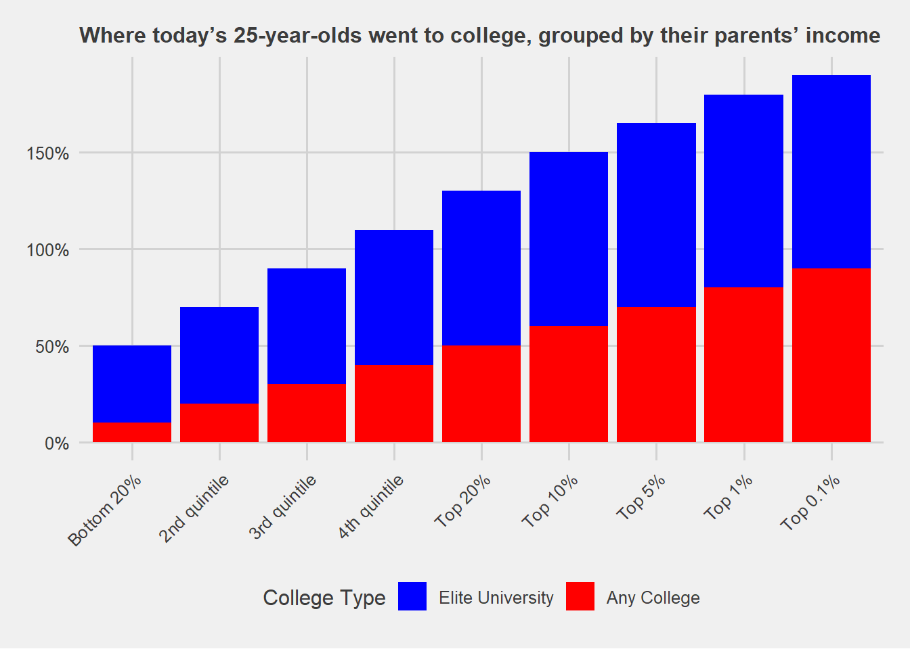

# Load necessary libraries
library(ggplot2)Warning: package 'ggplot2' was built under R version 4.3.3library(tidyr)Warning: package 'tidyr' was built under R version 4.3.3library(dplyr)Warning: package 'dplyr' was built under R version 4.3.3
Attaching package: 'dplyr'The following objects are masked from 'package:stats':
filter, lagThe following objects are masked from 'package:base':
intersect, setdiff, setequal, unionlibrary(ggthemes)Warning: package 'ggthemes' was built under R version 4.3.3# Create synthetic data
income_groups <- c("Bottom 20%", "2nd quintile", "3rd quintile", "4th quintile", "Top 20%", "Top 10%", "Top 5%", "Top 1%", "Top 0.1%")
elite_university <- c(0.1, 0.2, 0.3, 0.4, 0.5, 0.6, 0.7, 0.8, 0.9) # Example percentages
any_college <- c(0.4, 0.5, 0.6, 0.7, 0.8, 0.9, 0.95, 1, 1) # Example percentages
# Combine into a data frame
data <- data.frame(
income_group = factor(income_groups, levels = income_groups),
elite_university = elite_university,
any_college = any_college
)
# Convert to long format for ggplot2
data_long <- data %>%
pivot_longer(cols = c(elite_university, any_college), names_to = "type", values_to = "percentage")
# Plot the data
ggplot(data_long, aes(x = income_group, y = percentage, fill = type)) +
geom_bar(stat = "identity", position = "stack") +
scale_y_continuous(labels = scales::percent_format()) +
scale_fill_manual(values = c("elite_university" = "red", "any_college" = "blue"),
labels = c("Elite University", "Any College")) +
labs(
title = "Where today’s 25-year-olds went to college, grouped by their parents’ income",
x = "Parental Income Group",
y = "Percentage",
fill = "College Type"
) +
theme_fivethirtyeight() +
theme(
axis.text.x = element_text(angle = 45, hjust = 1),
plot.title = element_text(size = 12) # Adjust title size here (default is 18)
)